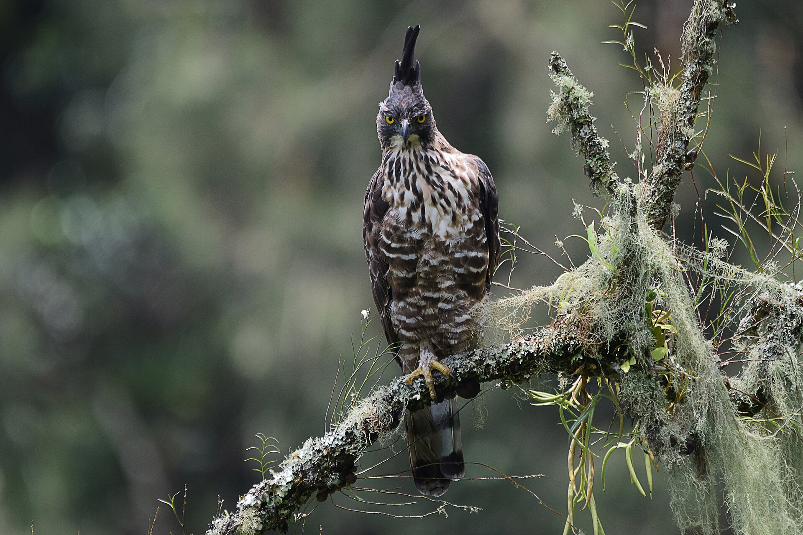

Sorotan: Elang Jawa

Ciri-ciri
- Memiliki jambul tegak di kepala.
- Bulu leher kemerahan dengan dada berbintik cokelat.
- Hidup di hutan pegunungan Pulau Jawa.
Ancaman
Populasinya menurun akibat hilangnya hutan dan perburuan. Pelestarian habitat menjadi kunci agar burung ini tetap ada di alam.